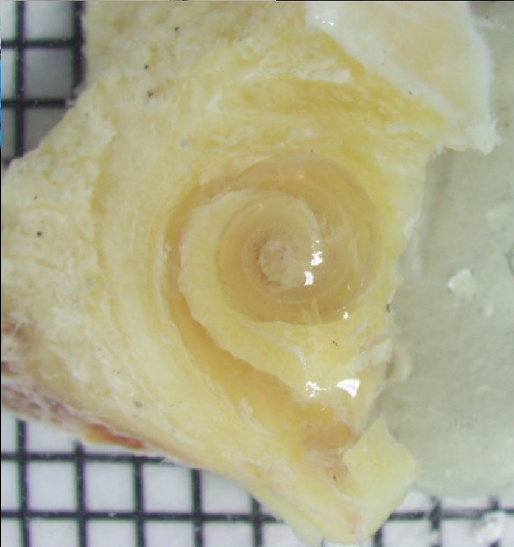

Organ of Corti


Organ of Corti: Organ of Corti is the name for part of cochlea that convert the sound waves into electrical signal cells use to communicate. Organ of Corti runs through the cochlea, near the edge. This microscopy image shows the cochlea turn from mid-way to the upper end. The green band is where organ of Corti is. Organ of Corti sits on an elastic membrane called the basilar membrane. This membrane vibrates when the sound wave hit the cochlea.